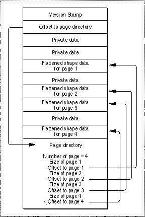

Print Files
When an application prints, QuickDraw GX collects the printing information sent by the application and writes it to a file. This process is called spooling and the file that is created is called a print file. QuickDraw GX then reads the print file and prints it to the appropriate device. The read and interpretation process is called despooling and the printing process is called imaging.A print file can be duplicated, dragged onto desktop printers, manipulated by print queues, and redirected to other printer devices without re-spooling. Print files also provide a device-independent information interchange format.
The QuickDraw GX spooling process consists of creating a print file and writing a stream of flattened shape data to that file. This data is unflattened during the unspooling process. Additional information must be provided in the print files. This includes job, formatting, and optimization information.
The job-related information includes the name of the job, the destination device, quality, and the number of copies. The formatting information includes the page sizes and orientations. The optimization information includes the font database.
The print file consists of two forks, a data fork and a resource fork. The data fork contains all the core data necessary to print a document. This consists of the flattened job data, the flattened shape data for each page, and the flattened format data for each page.
The print file begins with a 32-bit QuickDraw GX version followed by a 32-bit offset that describes the number of bytes from the beginning of the file to the start of the page directory located at the end of the file.
The page directory contains a 32-bit number indicating the number of pages in the document, an array of page sizes, and offsets to the start of the flattened shape data for each page. The format of a print file for a four-page document is shown in Figure 7-11.

- QuickDraw Picture Data in Print Files
- When creating a print file from a document that contains QuickDraw drawing commands, QuickDraw GX by default saves the QuickDraw data for each page in a tag object of tag type
'pict'attached to a rectangle shape. Therefore, if you are examining the data stream of a print file, you should note that a rectangle shape with an attached tag object of type'pict'indicates the presence of QuickDraw data. For more information about this tag object and QuickDraw data, see the discussion of the'pict'tag object in the advanced printing features chapter of Inside Macintosh: QuickDraw GX Printing.